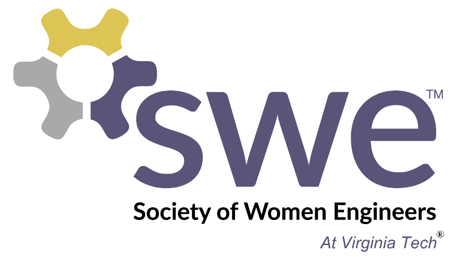

Digital Decisions - Questions in the digital age?
The podcast is focused on multiple questions that are formatted like a would you rather question to provide insight for digital media for modern world.
Animation: the Industry with Highest Suicide Rate
This blog post article is focusing on animation artists in Japan who are impacted from the Karoshi culture.

College dorm vs Apartment food
Our YouTube video focuses on the different availabilities for food in a college dorm vs food made in an apartment.

Society of Women Engineers
Society of Women Engineers is an organization at VT that is pushing to promote opportunites and support for women in the STEM communities